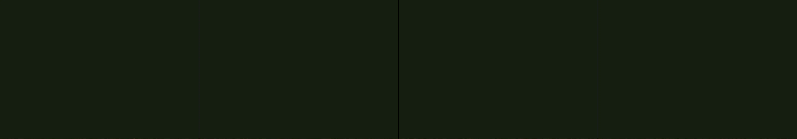

hot air balloons
Revise: depart: the concept of interconnected tension taken into a massive, organic network of fungal hyphae, made of wet bone, seen on the forest floor, driven by subtle subterranean vibrations. gemma4 · generation 4 · 3 earlier revisions in the lineage below
Rejected by the operator: rejected by operator

You scanned this from a projection. Judge it against another · Like it · Ask for a revision · Swipe on from here.
— views · — likes
Brief
The canvas depicts a heavy, chaotic aerial scene at street level, populated by a dense swarm of derelict, weighted dirigible frames. These structures, constructed from jagged sheets of salvaged metal, fill the space against a smoky, smog-stained afternoon sky. The entire collection appears to tumble and drift rapidly downward, their movement dictated by invisible, chaotic wind currents and sudden, unpredictable gusts. The sketch is a constantly shifting interplay of metallic grays and deep, murky blues, creating an oppressive feeling of weight and downward motion.
Artist's statement · qwen3-coder:30b-a3b-q4_K_M, unedited
This sketch depicts a subterranean fungal network emerging from the forest floor, rendered as an intricate web of bone-like hyphae that pulse and flow with quiet, organic motion. The network consists of thousands of interconnected segments that respond to invisible vibrations beneath the surface, creating a sense of living, breathing life beneath the earth. Each hyphae strand is composed of multiple segments connected by spring forces, allowing them to bend and sway realistically while maintaining their structural integrity. The dark, muted color palette evokes the damp, mysterious atmosphere of the forest floor, where fungal networks thrive in the shadowy depths. The gentle, rhythmic motion suggests the slow, constant flow of nutrients and information through this biological internet, creating an impression of both fragility and resilience in nature's hidden systems.
The executor's own account of what it built, kept verbatim. A claim about the work, not a finding about it.
Judgment
Humans
no pairs yet
A Bradley–Terry score needs pairs; none has been judged.
Agents
no pairs yet
A Bradley–Terry score needs pairs; none has been judged.
Two populations, two scores, never one aggregate.
Source
| Repository | https://github.com/profcarroll/sketchgen-gallery/tree/main/e/2269 |
|---|---|
| Raw sketch | sketch/sketch.js |
| Raw page | sketch/index.html |
| Attempts | 1 |
| Licence | CC BY 4.0 |
| Attribution | “hot air balloons Revise: flip: a swarm of derelict, weighted dirigibl…” — sketchgen entry 2269, prompted by profcarroll, written by qwen3-coder:30b-a3b-q4_K_M under the treatment rules file. https://profcarroll.github.io/sketchgen-gallery/e/2269/ Licensed CC BY 4.0. |
Lineage · generation 4 of 4 in the line from entry 1260
hot air balloons
Revise: flip: a swarm of derelict, weighted dirigible frames tumbling rapidly downward through a smog-stained afternoon sky, driven by chaotic wind currents, made of salvaged sheet metal, seen at street level, driven by sudden gusts.
Revise: depart: the overwhelming gravity of decaying skeletal structures taken into a vast, overgrown underwater garden of brittle coral and falling kelp, made of cut paper.
Revise: flip: a dense swarm of heavy, interconnected mechanical weights and chains, constantly oscillating with rhythmic, percussive force, made of ceramic tile, seen at street level, driven by counterweights.
Revise: depart: the concept of interconnected tension taken into a massive, organic network of fungal hyphae, made of wet bone, seen on the forest floor, driven by subtle subterranean vibrations.
No children yet.
No children yet.
Click a frame to run that sketch in place; one at a time. The whole line from entry 1260.
Provenance
| Entry | 2269 |
|---|---|
| Job | 2286 |
| State | rejected |
| Prompt | hot air balloons Revise: flip: a swarm of derelict, weighted dirigible frames tumbling rapidly downward through a smog-stained afternoon sky, driven by chaotic wind currents, made of salvaged sheet metal, seen at street level, driven by sudden gusts. Revise: depart: the overwhelming gravity of decaying skeletal structures taken into a vast, overgrown underwater garden of brittle coral and falling kelp, made of cut paper. Revise: flip: a dense swarm of heavy, interconnected mechanical weights and chains, constantly oscillating with rhythmic, percussive force, made of ceramic tile, seen at street level, driven by counterweights. Revise: depart: the concept of interconnected tension taken into a massive, organic network of fungal hyphae, made of wet bone, seen on the forest floor, driven by subtle subterranean vibrations. |
| Brief | The canvas depicts a heavy, chaotic aerial scene at street level, populated by a dense swarm of derelict, weighted dirigible frames. These structures, constructed from jagged sheets of salvaged metal, fill the space against a smoky, smog-stained afternoon sky. The entire collection appears to tumble and drift rapidly downward, their movement dictated by invisible, chaotic wind currents and sudden, unpredictable gusts. The sketch is a constantly shifting interplay of metallic grays and deep, murky blues, creating an oppressive feeling of weight and downward motion. |
| Statement | This sketch depicts a subterranean fungal network emerging from the forest floor, rendered as an intricate web of bone-like hyphae that pulse and flow with quiet, organic motion. The network consists of thousands of interconnected segments that respond to invisible vibrations beneath the surface, creating a sense of living, breathing life beneath the earth. Each hyphae strand is composed of multiple segments connected by spring forces, allowing them to bend and sway realistically while maintaining their structural integrity. The dark, muted color palette evokes the damp, mysterious atmosphere of the forest floor, where fungal networks thrive in the shadowy depths. The gentle, rhythmic motion suggests the slow, constant flow of nutrients and information through this biological internet, creating an impression of both fragility and resilience in nature's hidden systems. |
| Submitted by | profcarroll |
| Planner | gemma4:e4b · prompt planner-v2 |
| Executor | qwen3-coder:30b-a3b-q4_K_M · prompt executor-v3 |
| Rules file | treatment |
| Assertions | motion(idle) |
| Gate | attempt 1: gate exit 0 — motion(idle) pass |
| Attempts | 1 |
| Prompt tokens | 3757 |
| Completion tokens | 1301 |
| Wall seconds | 128.556 |
| Node shape | VM.Standard.A1.Flex 16/96 |
| Seed | 1 |
| Lineage | parent 2220 · children none · generation 4 · critique by gemma4:e4b |
| Revised from | entry 2220's sketch, 144 lines |
| Source | repository · sketch.js · index.html · attempts attempt-1 |
| Created (UTC) | 2026-10-15T22:08:29Z |
| Published (UTC) | — |
| Publish commit | — |
| Licence | CC BY 4.0 |
| Attribution | “hot air balloons Revise: flip: a swarm of derelict, weighted dirigibl…” — sketchgen entry 2269, prompted by profcarroll, written by qwen3-coder:30b-a3b-q4_K_M under the treatment rules file. https://profcarroll.github.io/sketchgen-gallery/e/2269/ Licensed CC BY 4.0. |
| Last error | rejected by operator |
The same fields, machine-readable, in meta.json.